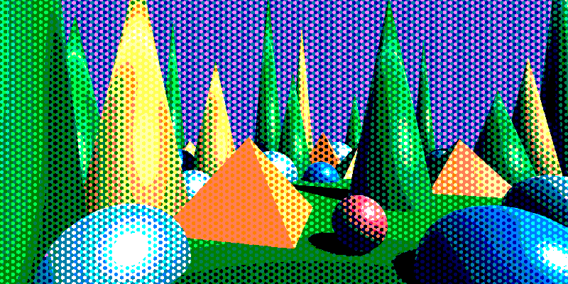
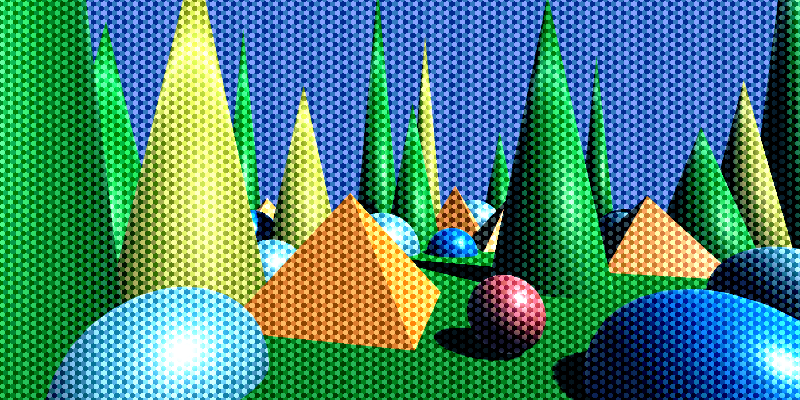
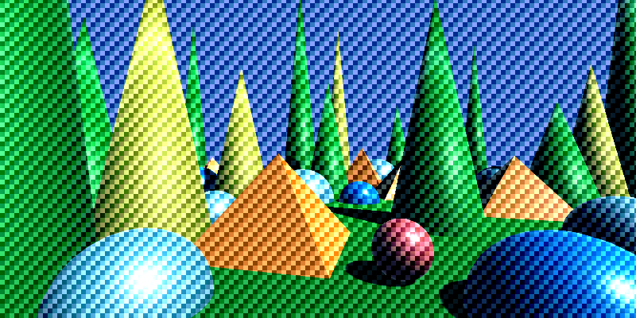
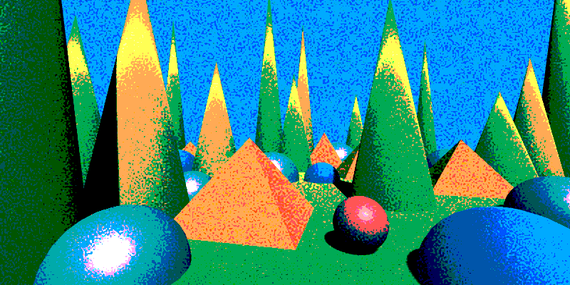
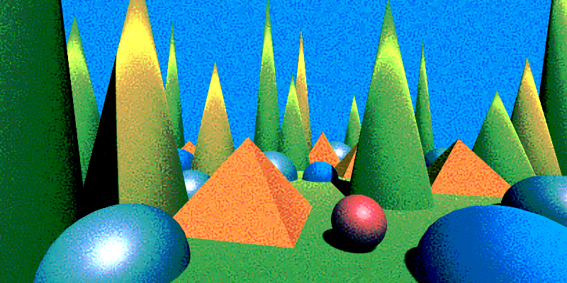

Effects reference: Dithering
Dither Grid Bias
Applies a data-driven dither bias using three independent user-defined matrices (one per color channel), snapped to either a hexagonal or rectangular pixel grid. The matrices are designed interactively in the Dither Grid Bias Designer and can produce a wide range of ordered dithering styles — Bayer-like, blue-noise-like, or fully custom.
The alpha channel is not changed by this effect.
Important
See also Dithering Tips
| Property | Range | Description |
|---|---|---|
| Grid Type | Hex / Rect | Cell geometry used for the dither grid. Hex snaps to pointy-top hexagonal cells; Rect snaps to square cells. |
| Matrix R / G / B | 🔢 | A floating-point matrix for each color channel. Values are normalized automatically. Designed using the Dither Grid Bias Designer. |
| Pixel Size | (0, ∞)² | Controls how large each matrix cell appears on screen. Higher values make the pattern blockier. |
| Pixelate | true / false | When enabled, snaps the output image to the dither grid so each pixel samples the color from its cell center. Use this with a matching Pixel Size for a fully pixelated look. |
| Pixel Offset | ℝ² | Sub-pixel offset applied when Pixelate is enabled. Shifts the snapping grid to align cell centers precisely. |
| Grid Angle | [-90°, 90°] | Rotates the dither grid in degrees. Applied in screen-pixel space so the rotation is physically isotropic regardless of render target aspect ratio. |
| Dither Amount Min | [-1, 1] | Minimum bias added to each channel before quantization. |
| Dither Amount Max | [-1, 1] | Maximum bias added to each channel before quantization. |
| Level Count | [1, ∞)³ | Per-channel quantization level count (R, G, B). Lower values produce more posterized output. |
| Smoothness | [0, 1] | Controls the softness of the quantization steps. |
| Use UV Map | true / false | Enables UV-map–driven dithering instead of screen-space coordinates. |
| UV Map | 🖼️ | UV map texture used to drive matrix sampling when Use UV Map is enabled. |
| Use Depth Compensation | true / false | When using a UV map, compensates for depth so the pattern appears the same scale at different distances. Blends between adjacent depth bands to smooth transitions and reduce popping. |
| UV Adaptive Background Blend | true / false | When enabled, blends the dithered output back toward the original color in regions where the UV map is denser than one dither cell per screen pixel, reducing Moiré patterns. |
| UV Blend Start | [0, 4] | UV gradient magnitude at which blending toward the background starts. Below this value the full dither is shown. |
| UV Blend End | [0, 8] | UV gradient magnitude at which the original color shows through completely. Above this value dithering is fully suppressed. |
Note
You could bake the matrices into a texture and use the Dither Texture Bias effect for slightly better performance. This effect is designed for interactive authoring. To export the dither texture, use the Dither Grid Bias Designer.
Tip
- You can render out a UV Map with the
UV Map Rendererfor the built-in pipeline, or the corresponding renderer feature for URP. There are more options for managing the scale. - Use UV Adaptive Background Blend together with Use Depth Compensation to avoid Moiré artifacts on surfaces that recede sharply in depth.

Hex grid, hard quantization.

Hex grid, soft quantization.

Rect grid.
Dither Matrix Bias
Turns the image into a dithered version using three independent user-supplied matrices (one for each color channel). This effect is ideal for designing and testing custom dithering patterns using small numerical matrices.
The alpha channel is not changed by this effect.
Important
See also Dithering Tips
| Property | Range | Description |
|---|---|---|
| Matrix R / G / B | 🔢 | A floating-point matrix for each color channel. Values are normalized automatically. |
| Pixel Size | (0, ∞)² | Controls how large each matrix cell appears on the screen. Higher values make the pattern blockier. |
| Pixelate | true / false | When enabled, snaps the output image to the dither grid so each pixel samples the color from its cell center. Use this with a matching Pixel Size for a fully pixelated look. |
| Pixel Offset | ℝ² | Sub-pixel offset applied when Pixelate is enabled. Shifts the snapping grid to align cell centers precisely. |
| Dither Amount Min | [-1, 1] | Minimum bias applied per channel based on the matrices. |
| Dither Amount Max | [-1, 1] | Maximum bias applied per channel. |
| Level Count | [1, ∞)³ | Per-channel quantization level count (R, G, B). |
| Smoothness | [0, 1] | Controls the softness of the quantization steps. |
| Matrix Offset | ℤ³ | Integer offset applied when tiling the dither matrices. Useful for shifting or animating patterns. |
| Use UV Map | true / false | Enables UV-map–driven dithering instead of screen-space coordinates. |
| UV Map | 🖼️ | UV map texture used to drive matrix sampling instead of screen-space UVs if enabled. |
| Use Depth Compensation | true / false | If on, scales the pattern to compensate for depth, so textures look the same size at any distance when using a UV map. Blends between adjacent depth bands to smooth transitions. |
| UV Adaptive Background Blend | true / false | When enabled, blends the dithered output back toward the original color in regions where the UV map is denser than one dither cell per screen pixel, reducing Moiré patterns. Only used when Use UV Map is enabled. |
| UV Blend Start | [0, 4] | UV gradient magnitude at which blending toward the background starts. Below this value the full dither is shown. |
| UV Blend End | [0, 8] | UV gradient magnitude at which the original color shows through completely. Above this value dithering is fully suppressed. |
Note
You could make a texture from the matrices and use the Dither Texture Bias effect for slightly better performance. This effect can still be used for prototyping. To design and export the dither texture, use the Dither Pattern Designer.
Tip
- You can render out a UV Map with the
UV Map Rendererfor the built-in pipeline, or the corresponding renderer feature for URP. There are more options for managing the scale.

Hard quantization.

Soft quantization.
Dither Texture Bias
Turns the image into a dithered version using a user-provided texture pattern. The texture’s values act as a bias added to the image before quantization, producing a stylized dither effect. Use this effect when you want full artistic control over the pattern (Bayer, blue noise, etc.).
The alpha channel is not changed by this effect.
Important
See also Dithering Tips
| Property | Range | Description |
|---|---|---|
| Dither Pattern | 🖼️ | The texture used as the dither pattern. Its RGB channels act as a per-pixel bias. |
| Mip Map Bias | [0, 2] | Bias applied to the mip level when sampling the dither pattern texture. Higher values select coarser mips, softening the pattern at a distance. |
| Dither Amount Min | [-1, 1] | The minimum value added to each channel based on the pattern. |
| Dither Amount Max | [-1, 1] | The maximum value added to each channel based on the pattern. |
| Level Count | [1, ∞)³ | The number of quantization levels for R, G, and B. Higher values retain more color detail. |
| Smoothness | [0, 1] | Controls how soft the transitions between quantization steps are. |
| Use UV Map | true / false | Enables UV-map–driven sampling of the dither pattern instead of screen-space UVs. |
| UV Map | 🖼️ | UV map texture used to drive pattern sampling when Use UV Map is enabled. |
| Use Depth Compensation | true / false | If enabled, compensates for depth when using a UV map so the pattern appears the same scale at different distances. Blends between adjacent depth bands to reduce popping and discontinuities. |
Tip
- A neutral pattern (flat gray) produces no dithering.
- Bayer, blue noise, and photographic film-style patterns give very different looks.
- When using high smoothness values, subtle dithering patterns can act as a film-grain-like texture.
- You can render out a UV Map with the
UV Map Rendererfor the built-in pipeline, or the corresponding renderer feature for URP. There are more options for managing the scale.

Hard quantization with strong dithering.

Soft quantization with smoothness applied.